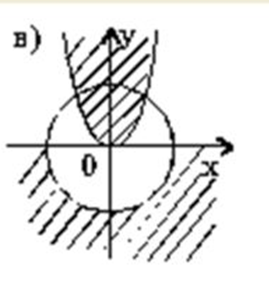

Вариант 15
Проверить принадлежность точки, координаты которой вводит пользователь (x, y – действительные числа), заштрихованной области или ее границе. На рисунках даны окружности с единичным радиусом и парабола y=x
2
.
